Spring Cloud 入门
微服务入门
微服务介绍
James Lewis is a Principal Consultant at ThoughtWorks and member of the Technology Advisory Board. James' interest in building applications out of small collaborating services stems from a background in integrating enterprise systems at scale. He's built a number of systems using microservices and has been an active participant in the growing community for a couple of years.
Martin Fowler is an author, speaker, and general loud-mouth on software development. He's long been puzzled by the problem of how to componentize software systems, having heard more vague claims than he's happy with. He hopes that microservices will live up to the early promise its advocates have found.
"Microservices" - yet another new term on the crowded streets of software architecture. Although our natural inclination is to pass such things by with a contemptuous glance, this bit of terminology describes a style of software systems that we are finding more and more appealing. We've seen many projects use this style in the last few years, and results so far have been positive, so much so that for many of our colleagues this is becoming the default style for building enterprise applications. Sadly, however, there's not much information that outlines what the microservice style is and how to do it.
“微服务” - 在软件架构拥挤的街道上又一个新名词。 尽管我们的自然倾向是以轻蔑的眼光来传递这样的东西，但这些术语描述了一种我们发现越来越吸引人的软件系统风格。
我们已经看到许多项目在过去几年中都采用了这种风格，迄今为止的结果是积极的，因此对于我们的许多同事来说，这正成为构建企业应用程序的默认风格。 可悲的是，没有太多的信息概述了微服务的风格以及如何去做。
-- 出自Google翻译 --
解读一
- 微服务是一种
三层架构
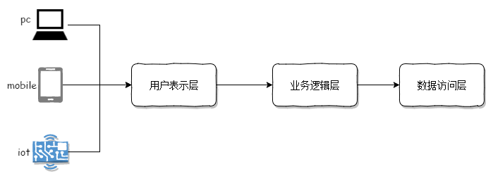In short, the microservice architectural style [1] is an approach to developing a single application as a suite of small services, each running in its own process and communicating with lightweight mechanisms, often an HTTP resource API. These services are built around business capabilities and independently deployable by fully automated deployment machinery. There is a bare minimum of centralized management of these services, which may be written in different programming languages and use different data storage technologies.
简而言之，微服务架构风格[1]是一种，，并。
这些，。
这些服务的，，并。
-- 出自Google翻译 --
解读二
- 一个应用程序就是一个服务
- 一个服务是具有自己独立的进程的
- 服务间通过Http协议进行通信
- 服务是根据业务构建的
- 每个服务可以用不同语言构建
- 每个服务可以有自己独立的存储技术
微服务的架构特点
Componentization via Services
服务组件化
业务被差分为更小的逻辑进行实现
Organized around Business Capabilities
围绕业务进行组织
逻辑只为绕具体的业务来实现
Products not Projects
产品不是项目
要有做产品的心态
Smart endpoints and dumb pipes
智能端点和哑管
服务间调用的方式
Decentralized Governance
去中心化治理
组件能针对不同的业务特点选择不同的技术平台
Decentralized Data Management
去中心化数据管理
组件能针对不同的业务特点选择不同的存储技术
Infrastructure Automation
基础设施自动化
自动化测试、自动化部署
Design for failure
容错机制
能快速定位错误，并快速修复错误
Evolutionary Design
演进式设计
根据业务发展，可以不断进化升级
???蒙圈???
黑马大饭店
第一季
场景一
传统的单应用架构
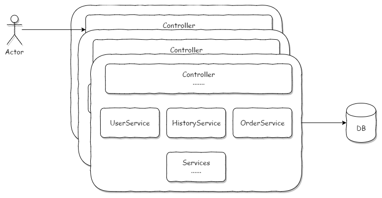分布式的单应用架构
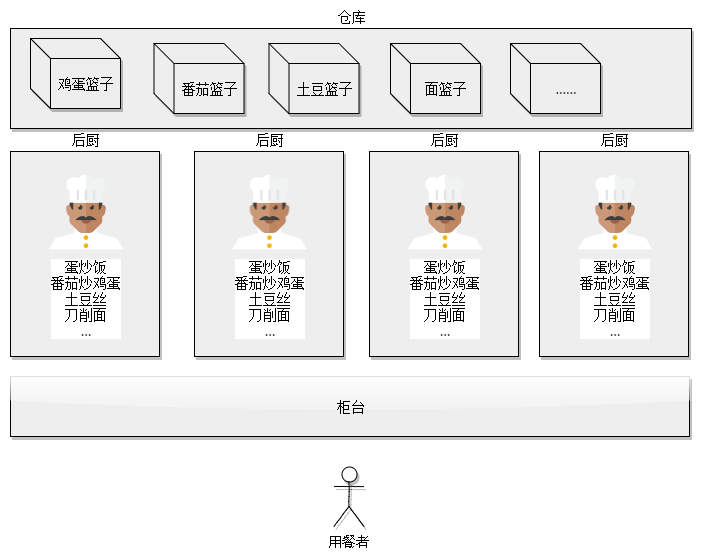单应用架构优缺点
优点
- 前期易于开发
- 前期易于部署
- 前期易于分布式扩展
缺点
- 难于维护和迭代
- IDE工具过载
- 运行时容器环境过载
- 后期部署困难
- 后期团队协作困难
- 技术框架固定
场景二

微服务应用架构
微服务应用架构
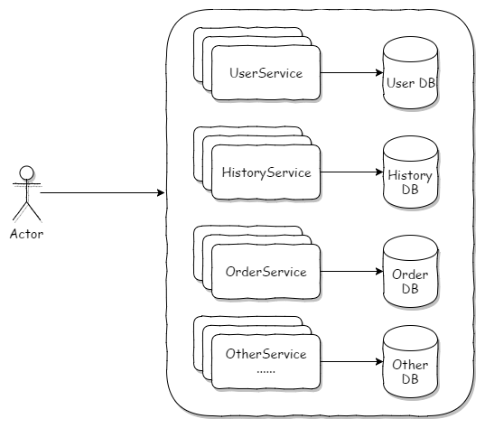分布式的微服务架构
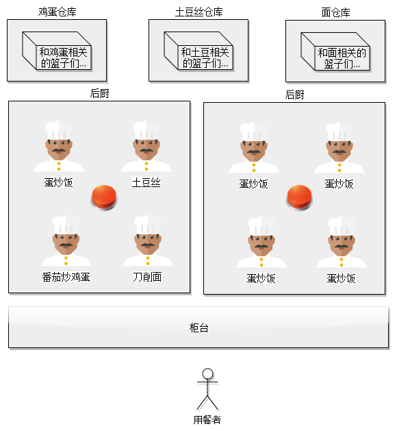微服务框架优缺点
优点
-
支持持续交付和部署大型复杂的应用程序
- 更易于测试
- 更易于部署
- 开发人员更灵活
-
每个微服务都相对较小
- 开发人员更容易理解
- IDE更快地提高了开发人员的工作效率
- 应用程序启动速度更快，这使开发人员的工作效率更高，并加快了部署速度
- 容错机制更高
- 消除对技术堆栈的长期承诺
缺点
-
分布式系统复杂度高
- 测试更复杂
- 开发者必须实现服务间的通信机制
- 如果不使用分布式事务，会很难实现跨多个服务的用例
- 实现跨多个服务的用例需要团队间的更认真的合作
- 生产环境部署复杂度高
- 内存消耗更多
到底什么是微服务
什么是Spring Cloud
Spring Cloud是快速构建分布式系统的
可以实现微服务
第一个微服务
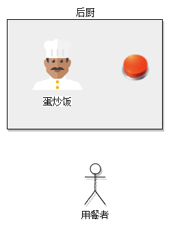 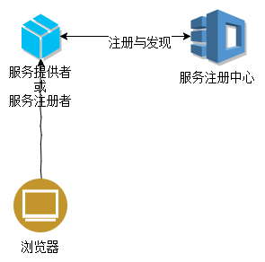服务注册与发现
- Eureka Server 服务注册中心
- Eureka Client 服务注册者
Eureka Server服务注册中心
Eureka Server服务注册中心
步骤一: 配置依赖
compile('org.springframework.cloud:spring-cloud-starter-eureka-server')Eureka Server服务注册中心
步骤二: 标注Application类
@EnableEurekaServer
@SpringBootApplication
public class EurekaServerApplication {
public static void main(String[] args) {
SpringApplication.run(EurekaServerApplication.class, args);
}
}@EnableEurekaServer 表示当前应用为服务注册中心
Eureka Server服务注册中心
步骤三: 配置application.yml
eureka:
client:
register-with-eureka: false
fetch-registry: false- register-with-eureka: 表示是否需要将自己注册到注册中心
- fetch-registry: 是否向注册中心定时更新自己状态
Eureka client服务注册者
Eureka client服务注册者
步骤一: 配置依赖
compile('org.springframework.cloud:spring-cloud-starter-eureka')Eureka client服务注册者
步骤二: 标注Application类
@EnableDiscoveryClient
@SpringBootApplication
public class EurekaClientApplication {
public static void main(String[] args) {
SpringApplication.run(EurekaClientApplication.class, args);
}
}@EnableDiscoveryClient 表示当前应用需要注册到注册中心
Eureka client服务注册者
步骤三: 配置application.yml
eureka:
client:
register-with-eureka: false
fetch-registry: false- register-with-eureka: 表示是否需要将自己注册到注册中心
- fetch-registry: 是否向注册中心定时更新自己状态
注册中心的高可用性
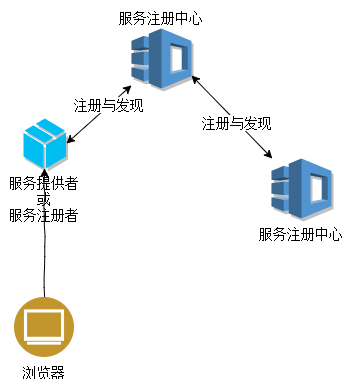注册中心间相互注册
注册中心一
server:
port: 8761
eureka:
client:
register-with-eureka: true
fetch-registry: true
service-url:
defaultZone: http://localhost:8762/eureka注册中心二
server:
port: 8762
eureka:
client:
register-with-eureka: true
fetch-registry: true
service-url:
defaultZone: http://localhost:8761/eurekaSpring Boot配置active
- resources目录下新建 application.yml
- resources目录下新建 application-xxx.yml
- 在application.yml中配置
spring: profiles: active: xxx
application-xxx.yml的命名中，xxx作为spring.profiles.active的配置，指明按照application-xxx.yml进行配置应用
Idea下配置测试active
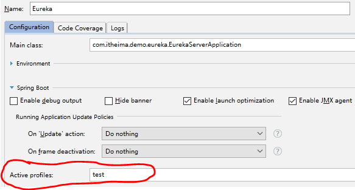命令行下测试运行active
- 打包程序
-
java -jar myproject.jar --spring.profiles.active=xxx
小结
- 至少有一个注册中心
- 所有服务都是服务注册者(服务提供者)
- 开发和部署是两个概念
微服务概念形态
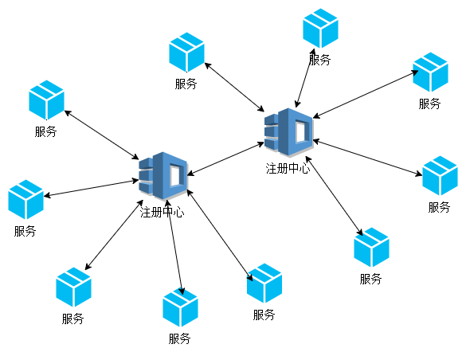黑马大饭店
第二季
服务消费者 Feign
Feign client服务消费者
步骤一: 配置依赖
compile('org.springframework.cloud:spring-cloud-starter-feign')Feign client服务消费者
步骤二: 标注Application类
@EnableFeignClients
@SpringBootApplication
public class FeignClientApplication {
public static void main(String[] args) {
SpringApplication.run(FeignClientApplication.class, args);
}
}@EnableFeignClients 表示当前应用可以调用其他服务
Feign client服务消费者
步骤三: 新建Feign Service
@FeignClient("servicename")
public interface FeignService {
@GetMapping("/xxx")
public String xxx();
}- @FeignClient: 表示要调用的服务,值为服务名称
- 当前类声明为接口
- 声明的方法和被调用的服务接口方法一致
- 通过@Autowired 声明并使用此服务
Feign 高可用性
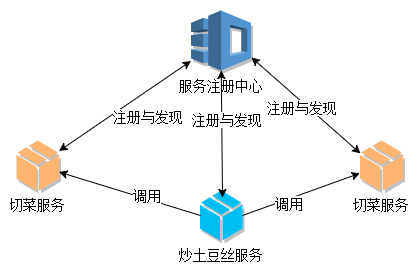小结
- Feign实现了服务间的调用
- Feign实现了负载均衡
微服务概念形态
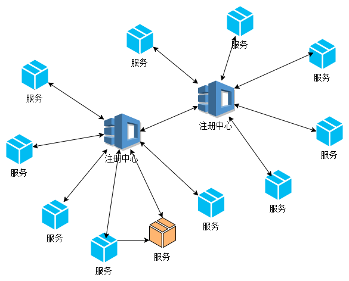黑马大饭店
第三季
场景
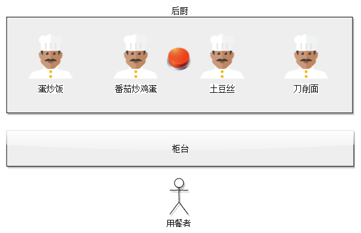升级管理
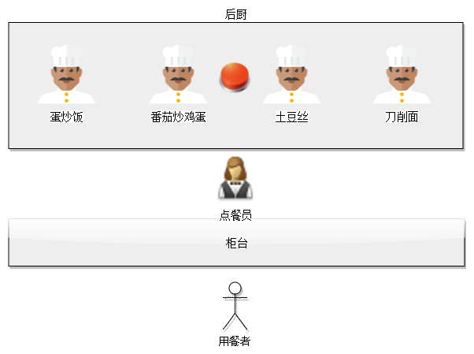网关 API Gateway
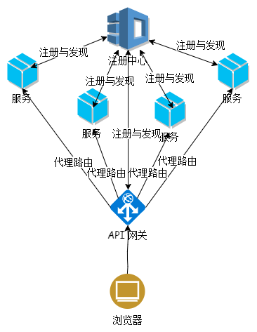 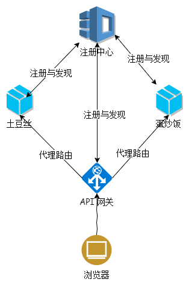API网关
步骤一: 配置依赖
compile('org.springframework.cloud:spring-cloud-starter-zuul')API网关
步骤二: 标注Application类
@EnableZuulProxy
@SpringBootApplication
public class GatewayApplication {
public static void main(String[] args) {
SpringApplication.run(GatewayApplication.class, args);
}
}@EnableZuulProxy 表示当前应用是网关路由
API网关
步骤三: 配置application.yml
eureka:
instance:
hostname: localhost
client:
register-with-eureka: true
fetch-registry: true
service-url:
defaultZone: http://localhost:8761/eureka/
zuul:
routes:
#分发到a服务
a.path: /a/**
a.serviceId: a-service
a.retryable: true
#分发到b服务
b.path: /b/**
b.serviceId: b-service
b.retryable: true
host:
connect-timeout-millis: 30000
socket-timeout-millis: 30000- path:分流哪些路径
- serviceId:服务的名称
- retryable:是否重试
- connect-timeout-millis:连接超时
- socket-timeout-millis:响应超时
小结
- API Gateway 统一了端口
- API Gateway 集中式管理了接口
- API Gateway 请求的唯一出入口
微服务概念形态
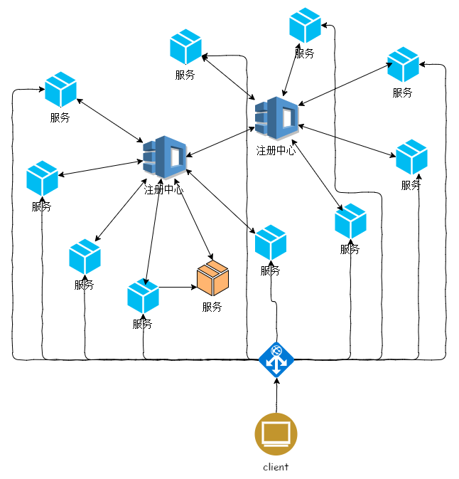彩票项目微服务化
目前的架构
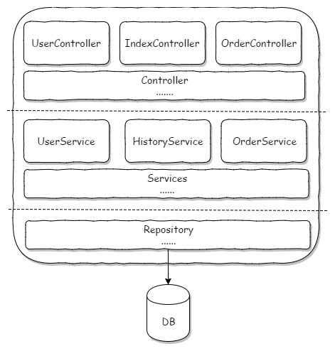目前架构的特点
- 单应用架构，具备单应用架构的优缺点
- 前后端未分离
微服务化后的架构
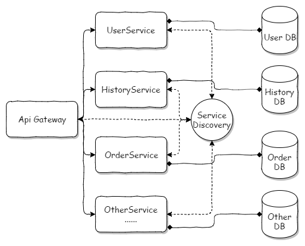微服务化后的特点
- 微服务
- 前后端分离
交互的介绍
见实际运行效果
前端代码部署
- NodeJs环境搭建
- 项目导入
- 命令行到项目目录下，运行
npm run serve
服务的拆分
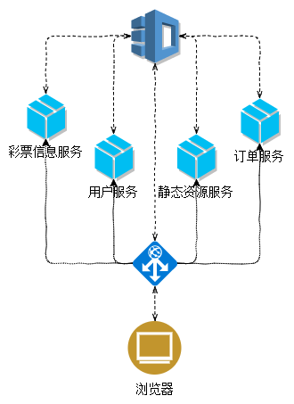彩票信息服务
数据库选择
开发阶段: H2数据库
依赖添加
compile('org.projectlombok:lombok:1.16.20')
compile('org.springframework.boot:spring-boot-starter-data-jpa')
compile('com.h2database:h2:1.4.196')application.yml配置
spring:
h2:
console:
enabled: true
settings:
web-allow-others: true
path: /itheima-h2-console
datasource:
url: jdbc:h2:file:./info;DB_CLOSE_ON_EXIT=FALSE
driverClassName: org.h2.Driver
username: sa
password: 123
# data: classpath:import.sql
jpa:
database-platform: org.hibernate.dialect.H2Dialect
hibernate:
ddl-auto: update交互接口
见接口文档
用户服务
数据库选择
开发阶段: H2数据库
依赖添加
compile('org.projectlombok:lombok:1.16.20')
compile('org.springframework.boot:spring-boot-starter-data-jpa')
compile('com.h2database:h2:1.4.196')application.yml配置
spring:
h2:
console:
enabled: true
settings:
web-allow-others: true
path: /itheima-h2-console
datasource:
url: jdbc:h2:file:./user;DB_CLOSE_ON_EXIT=FALSE
driverClassName: org.h2.Driver
username: sa
password: 123
# data: classpath:import.sql
jpa:
database-platform: org.hibernate.dialect.H2Dialect
hibernate:
ddl-auto: update交互接口
见接口文档
订单服务
数据库选择
开发阶段: H2数据库
依赖添加
compile('org.projectlombok:lombok:1.16.20')
compile('org.springframework.boot:spring-boot-starter-data-jpa')
compile('com.h2database:h2:1.4.196')application.yml配置
spring:
h2:
console:
enabled: true
settings:
web-allow-others: true
path: /itheima-h2-console
datasource:
url: jdbc:h2:file:./order;DB_CLOSE_ON_EXIT=FALSE
driverClassName: org.h2.Driver
username: sa
password: 123
# data: classpath:import.sql
jpa:
database-platform: org.hibernate.dialect.H2Dialect
hibernate:
ddl-auto: update交互接口
见接口文档
静态资源服务
依赖添加
compile('org.springframework.boot:spring-boot-starter-thymeleaf')
compile('net.sourceforge.nekohtml:nekohtml:1.9.22')application.yml配置
spring:
thymeleaf:
cache: false
encoding: UTF-8
content-type: text/html
mode: LEGACYHTML5必备的服务
- 服务注册中心
- API 网关